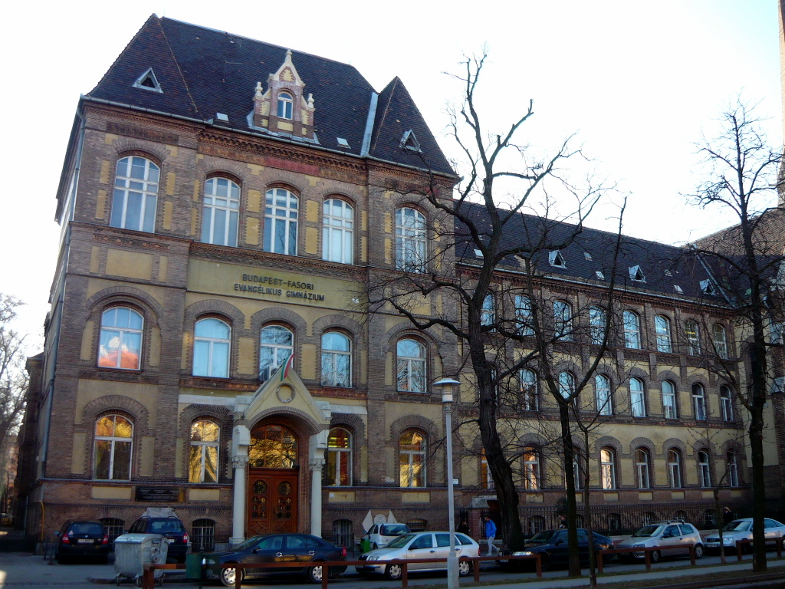

Számos területen volt szakértő Neumann a matematikában, fizikában, az informatikában és volt vegyészeti végzettsége is. Neumann fontos eredményeket ért el az axiomatikus halmazelméletben, a funkcionálanalízisben, vizsgálta a Hilbert-terek operátorait és önadjungált transzformációit, tanulmányozta az ilyen operátorokból álló gyűrűket (az ˙ún. Neumann-algebrákat). Bevezette és vizsgálta a Neumann-regulárisnak nevezett gyűrűk osztályát. Alapvető munkákat írt az általa kezdeményezett folytonos geometriában is, amellyel olyan geometriákat nyert ahol a dimenziószám nemcsak pozitív egész szám lehet. Van néhány a számelmélettel kapcsolatos munkája is. Ő alapozta meg a játékelméletet is. 1944-ben O. Morgensternnel együtt megírták a téma első monográfiáját benne a minimax-tétellel. Neumann jól ismerte az elméleti fizikát is. A második világháború idején. Részt vett az atomenergia kutatásokban például a Manhattan-tervben. Később kinevezték az Atomenergia Bizottság tagjává is. A számítógépekkel Hermann Heine Goldstine révén ismerkedett meg. 1944-ben a Pennsylvaniai Egyetemen döntően hozzájárult az első teljesen elektronikus digitális számítógép ENIAC és késöbb az EDVAC. Az EDVIAC volt az első Neumann-elveken alapuló számítógép.
Neumann több elismerést is kapott külföldön:
- Tiszteletbeli doktora lett:
- A princetoni egyetemnek
- A Pennsylvania-egyetemnek és Harvard-egyetemeknek
- Az isztambuli és a Maryland-egyetemeknek
- A müncheni műegyetemnek
- A Columbia egyetemnek
- Tagja lett:
- National Academy of Sciences-nek
- Az American Academy of Arts and Sciences-nek
- A holland királyi akadémianak
- A Római Accademia Nazionale dei Lincei-nek
- A milanói Instituto Lombardo di Scienze e Lettere-nak
- A limai Academia Nacional de Ciencias Exactas-nak
- 1951-től elnöke lett az Amerikai Matematikai Társulatnak
- 1956-ban Enrico Fermi díjat kapott és Szabadség Èrdemrendet adományoztak a számára
